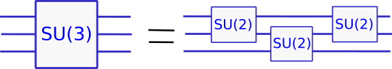
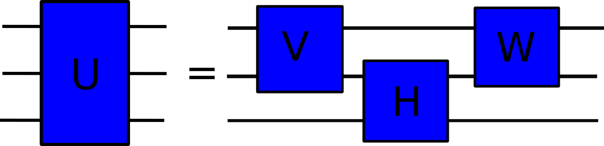
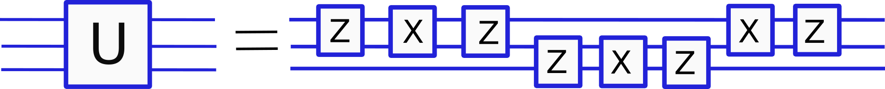

Code
import numpy as np
from scipy.stats import unitary_groupimport numpy as np
from scipy.stats import unitary_group 
Recently I needed to decompose a general single-qutrit gate into elementary qutrit rotations, but was unable to find a ready-to-use result in the literature. After some time I gave up on searching and came up with a simple decomposition of the following form

The main purpose of this post is to give an explicit algorithm for constructing this decomposition. The procedure I propose is pretty elementary and only uses singular value decomposition, no fancy Cartan’s decompositions. If you want to cut to the chase, proceed to summary and implementation. For the backstory start here. For context I also cover Euler’s decomposition for single-qubit gates and give a brief motivation for the problem, for this read on.
NOTE: I’ve got a lot of feedback after sharing this blog post on LinkedIn, see here for the discussion. Many papers were pointed out that contain similar results. The most elementary and directly related discussion can be found in App.A of this paper, as pointed out by Barry Sanders. Other references suggested include
- https://journals.aps.org/pra/abstract/10.1103/PhysRevA.97.022328
- https://journals.aps.org/prl/abstract/10.1103/PhysRevLett.73.58
- https://opg.optica.org/optica/fulltext.cfm?uri=optica-3-12-1460&id=355743
- https://arxiv.org/abs/quant-ph/0511041
- https://arxiv.org/abs/quant-ph/0511019
- https://arxiv.org/abs/2206.03842
So, why care about qutrits? Well, first thing to note is that they exist. Most quantum systems in the real world, in contrast to quantum computing textbooks, are not two-level. Qutrits (three-level systems) and, more generally, qudits (d-dimensional systems) are omnipresent. Trapped ion quantum computers give one example where qudits naturally arise, see e.g. https://arxiv.org/abs/1907.08569. Another interesting example are superconducting qubits. In fact, a bare superconducting circuit is rather a harmonic oscillator and as such has infinitely many energy levels. Typically, an anharmonicity in the form of a Josephson junction is introduced, which allows to decouple the two lowest energy levels from the rest to give the familiar superconducting qubit. However, the higher energy levels are still there and can be fruitfully exploited.
For a theorist, more levels is a blessing. More states fit into the system of the same size (for example dimension of the qutrit state space scales as \(3^n\) instead of \(2^n\) for a qubit system) opening up novel optimization possibilities, here is just one example https://arxiv.org/abs/1909.08973. An experimentator probably has mixed feelings about higher levels, because they are typically associated more noise and calibration overhead. Exploiting higher levels is therefore an promising yet challenging possibility. There are already many proofs of concept, see e.g. this result on using the third level in a superconducting circuit to improve the fidelity of the Toffoli gate https://arxiv.org/abs/2109.00558.
Me (and probably you too) usually take for granted that an arbitrary single-qubit gate \(U\) can be decomposed into a product of three elementary rotations. The rotations are usually chosen as
\[\begin{align} &R_X(\theta)=e^{-i\theta X/2}=\begin{pmatrix} \cos\frac{\theta}2 & -i\sin\frac{\theta}2 \\ -i\sin\frac{\theta}2 & \cos\frac{\theta}2\end{pmatrix}\\ &R_Y(\theta)=e^{-i\theta Y/2}=\begin{pmatrix} \cos\frac{\theta}2 & -\sin\frac{\theta}2 \\ \sin\frac{\theta}2 & \cos\frac{\theta}2\end{pmatrix}\\ &R_Z(\theta)=e^{-i\theta Z/2}=\begin{pmatrix} e^{-i \theta/2} & 0 \\ 0 & e^{i\theta/2}\end{pmatrix} \end{align}\]
and a sample decomposition reads
\[\begin{align} U = R_X(\theta_1)R_Z(\theta_2)R_X(\theta_3) \label{XZX} \ . \end{align}\]
This one is known as the Euler decomposition. Choosing angles \(\theta_i\) appropriately one can obtain any \(2\times 2\) special (with unit determinant) unitary matrix \(U\in SU(2)\).
Let me make a couple of remarks in an attempt to make relation \(\eqref{XZX}\) a bit more intuitive. First of all, the dimension of the group \(U(n)\), i.e. a group of \(n\times n\) unitary matrices is equal to \[\operatorname{dim} U(n)=n^2 \ .\] If you also factor out the global phase, i.e. impose \(\operatorname{det}U=1\), you get the special unitary group \(SU(n)\) which has one dimension less \[\operatorname{dim} SU(n)=n^2-1\ .\] For a single-qubit gate \(n=2\) and \(\operatorname{dim}=3\). This implies that the right-hand side in eq.\(\eqref{XZX}\) needs to have at least three parameters and hence three elementary rotations. Good, this explains why are there three terms in Euler’s decomposition. (This technique of unsubtle parameter counting in fact extends far more generally. For example, it can be used to deduce a minimum amount of \(CNOT\) gates necessary to compile an arbitrary \(n\)-qubit unitary, as I discussed here).
Now, is there anything special about this particular combination of rotations \(XZX\)? Well, yes and no. In fact, almost any three single-parameter unitaries would work. Other possible decompositions are \(XYX\), \(YZY\) etc, but also less common options exist such as \(XYZ\).
However, decompositions like \(XZX\) are special in a sense that they are examples of Cartan (aka KAK) decompositions, hinging on the structure of the underlying \(su(2)\) algebra. Decompositions of two-qubit gates into \(CNOT\) gates and single-qubit rotations is another important example where KAK arise. I will not cover the subject here, but can recommend a quite readable introduction with applications to quantum gates https://arxiv.org/abs/quant-ph/0010100.
Writing decomposition with generic parameters is one thing, fixing them explicitly for a given matrix \(U\) is another. Here how you can do it for Euler’s decomposition. The key observation is that because \(XZ=-XZ\) we have \[X R_Z(\theta)X=R_Z(-\theta),\quad X R_X(\theta)X=R_X(\theta) \ .\] Multiplying \(\eqref{XZX}\) by \(X\) from left and right we get \[XUX=R_X(\theta_1)R_Z(-\theta_2)R_X(\theta_3) \ .\] Therefore \[M:= UXU^\dagger X=R_x(\theta_1)R_Z(2\theta_2)R_x^\dagger(\theta_1) \ .\]
Since \(R_Z\) is a diagonal gate, the right hand side is nothing else but a unitary diagonalization of matrix \(M\). Therefore, finding \(\theta_1\) and \(\theta_2\) reduces to the standard diagonalization procedure. The last parameter \(\theta_3\) is then read off from \(R_X(\theta_3)=R_Z^\dagger(\theta_2) R_X^\dagger(\theta_1)U\).
Here is a quick and dirty code that implements the procedure. It won’t handle some edge cases and may not be the most efficient, but it will work with random unitaries.
# Define X, RX, and RZ.
X = np.array([[0, 1], [1, 0]])
def RX(theta):
return np.array(
[[np.cos(theta/2), -1j*np.sin(theta/2)],
[-1j*np.sin(theta/2), np.cos(theta/2)]])
def RZ(theta):
return np.array(
[[np.exp(-1j*theta/2), 0],
[0, np.exp(1j*theta/2)]])
# Recovering angle from cos and sin.
def angle_from_cos_and_sin(c, s):
assert np.allclose(c**2+s**2, 1), 'Input does not satisfy c**2+s**2=1'
phi = np.arccos(c)
if np.allclose(np.sin(phi), s):
return phi
else:
return -phi
# Decomposition routine.
def XZX_decomposition(U):
assert np.allclose(U.conj().T @ U, np.eye(2)), 'Input matrix is not unitary.'
assert np.allclose(np.linalg.det(U), 1), 'Input matrix has non-unit determinant.'
# Construct the matrix to diagonalize.
M = U @ X @ U.conj().T @ X
# Diagonalization.
RZ_squared, RX1 = np.linalg.eig(M)
assert np.allclose(RX1 @ np.diag(RZ_squared) @ RX1.conj().T, M)
# Matrix RX1 is not necessarily of RX(theta) form yet, but it can be made so by multiplying with a diagonal unitary.
phase_00 = RX1[0, 0]/np.abs(RX1[0, 0])
RX1 /= phase_00 # Now RX1[0,0] is real and RX[1,0] has the correct phase.
phase_10 = RX1[1, 0]/np.abs(RX1[1, 0])
phase_01 = RX1[0, 1]/np.abs(RX1[0, 1])
RX1 = RX1 @ np.diag([1, phase_10/phase_01]) # Now RX1[0,1] and RX1[1,1] have the correct phase as well.
# Determine theta_1.
cos = RX1[0, 0]
sin = 1j*RX1[0, 1]
theta_1 = 2*angle_from_cos_and_sin(cos, sin)
assert np.allclose(RX(theta_1), RX1)
# Theta_2 from RZ squared.
theta_2 = 1j*np.log(RZ_squared[0])
assert np.allclose(RZ(theta_2), RZ(theta_2))
# Determine RX(theta_3) and theta_3.
RX2 = RZ(-theta_2) @ RX(-theta_1) @ U
cos = RX2[0, 0]
sin = 1j*RX2[0, 1]
theta_3 = 2*angle_from_cos_and_sin(cos, sin)
assert np.allclose(RX(theta_3), RX2)
if np.allclose(RX(theta_1) @ RZ(theta_2) @ RX(theta_3), U):
return theta_1, theta_2, theta_3
raise TypeError('Something went wrong during decomposition.')And now let’s test.
# Draw a random unitary and normalize its det to 1.
U = unitary_group.rvs(2, random_state=0)
U = U / np.linalg.det(U)**(1/2)
# Decompose and check
theta_1, theta_2, theta_3 = XZX_decomposition(U)
check = np.allclose(RX(theta_1) @ RZ(theta_2) @ RX(theta_3), U)
print(f'Does it work? {check}')Does it work? TrueFrom \(XZX\) decompositions we can get related ones. For example, since conjugating by the Hadamard gate \(H\) swaps \(X\) and \(Z\) we can reduce \(ZXZ\) decomposition of \(U\) to \(XZX\) decomposition of \(HUH\).We’ll need it a bit later so let’s implement this one also.
def ZXZ_decomposition(U):
H = np.array([[1, 1], [1, -1]])/np.sqrt(2)
return XZX_decomposition(H@U@H)A simple check.
U = unitary_group.rvs(2, random_state=2)
U /= np.sqrt(np.linalg.det(U))
theta_1, theta_2, theta_3 = ZXZ_decomposition(U)
print('Check:', np.allclose(RZ(theta_1) @ RX(theta_2) @ RZ(theta_3), U))Check: True# Decomposing arbitrary single-qutrit gate ## Elementary qutrit gates Qutrit is an abstraction for any three-level quantum system and it’s is probably less familiar than a qubit. General qutrit gate belongs to \(SU(3)\) and elementary rotation gates for a qutrit are commonly chosen as
\[\begin{align} R^{01}_X(\theta)=\begin{pmatrix}\cos\frac{\theta}2&-i\sin\frac{\theta}2&0\\-i\sin\frac{\theta}2&\cos\frac{\theta}2&0\\0&0&1\end{pmatrix},\quad R^{01}_Z(\theta)=\begin{pmatrix}e^{-i\theta/2}&0&0\\0&e^{i\theta/2}&0\\0&0&1\end{pmatrix} \ , \end{align}\]
and
\[\begin{align} R^{12}_X(\theta)=\begin{pmatrix}1&0&0\\0&cos\frac{\theta}2&-i\sin\frac{\theta}2\\0&-i\sin\frac{\theta}2&\cos\frac{\theta}2\end{pmatrix},\quad R^{12}_Z(\theta)=\begin{pmatrix}1&0&0\\0&e^{-i\theta/2}&0\\0&0&e^{i\theta/2}\end{pmatrix} \ . \end{align}\]
Similar expression hold to \(R_Y^{01}\) and \(R_Y^{12}\) but we won’t need them. So these are basically single-qubit rotation gates which touch only two out of the three levels of a qutrit. By the way, gates that act only on levels 1 and 3 look bit awkward, and here we will do without them. ## Is there an off-the-shelf result? (I’m bad at googling) A general single-qutrit transformation lives in \(SU(3)\) and hence has \(3^2-1=8\) real parameters. Thus, we expect to have a decomposition which is a product of 8 elementary rotations. But how exactly will it look, and how to determine the parameters? To my surprise, the only explicit result I found is equation (4) in this paper https://arxiv.org/abs/1105.5485 which goes something like \[U = R_Y^{01}R_Y^{02}R_Y^{01}R_Z^{01}R_Z^{02}R_Y^{01}R_Y^{02}R_Y^{01} \ .\]
The result is based on a particular Cartan decomposition of \(SU(3)\) (which is non-unique) and does not look very intuitive. Moreover, apparently no explicit algorithm to find the parameters of these rotations is given.
I will now construct the explicit decomposition for a general single-qutrit gate advertised in the beginning. First, let us separate a general \(U\in SU(3)\) into four blocks \[U=\begin{pmatrix}A&B\\C&D\end{pmatrix}=\begin{pmatrix} a_{00}& a_{01} & b_0\\ a_{10} & a_{11} & b_1\\ c_0&c_1&d\end{pmatrix} \ .\]
Here \(A\) is a \(2\times2\) matrix, \(B\) and \(C^\dagger\) are \(2\times1\) column vectors and \(D\) is a scalar. Now comes the key point. We factorize matrix \(A\) using the singular value decomposition (SVD) \[A = V \Sigma W \ . \label{A SVD}\] Here \(V\) and \(W\) are unitary, while \(\Sigma=\operatorname{diag}(\sigma_0,\sigma_1)\) is diagonal with \(\sigma_i\ge0\). SVD is a very useful factorization that works for arbitrary matrices, not necessarily hermitian or unitary (or even square). Using the SVD of \(A\) we can factorize \(U\) as follows \[\begin{align} U=\begin{pmatrix}V&0\\0&1\end{pmatrix}\begin{pmatrix}\Sigma&V^\dagger B\\ CW^\dagger&D\end{pmatrix}\begin{pmatrix}W&0\\0&1\end{pmatrix}=V^{01}\begin{pmatrix}\Sigma&V^\dagger B\\ CW^\dagger&D\end{pmatrix}W^{01} \label{U part} \ . \end{align}\] The left and right matrices act only within the first two levels. The middle matrix looks like it acts on all levels of the qutrit, but in fact it doesn’t. I will leave at as an exercise to show that matrix \(A\) necessarily has a unit singular value (Hint: unitarity condition for \(U\) implies \(A^\dagger A+C^\dagger C=\mathbb{1}\). Because \(C\) is a vector \(C^\dagger C\) is not full rank and has a zero eigenvalue). I will assume that \(\sigma_{0}=1\). This has consequences. In a unitary matrix each row and column has a unit norm. Therefore, if some entry in a unitary matrix is equal to one, all other elements in the corresponding row and column must be zero. Thus, the middle matrix in \(\eqref{U part}\) in fact looks like \[H^{12}:=\begin{pmatrix}1&0&0\\ 0&\sigma_{1}& b'\\ 0&c'&d\end{pmatrix}\] and hence only acts on levels 1 and 2. The overall decomposition can be sketched as follows.  (Here is a catch question. Are the lines on this diagram qubits or qutrit levels? Right, they aren’t qubits.)
Therefore, we have split a general qutrit gate into three gates touching two levels only. Each of these can be decomposed into the elementary rotations using Euler’s method for single-qubit gates. That’s good. However, as it stands the decomposition is not optimal. So far all matrices \(V, H, W\) are generic \(U(2)\) matrices. Each comes with 3 parameters and also a global phase. We should be able to do better. Wait, but why is global phase a problem?
Sure, global phases are normally ignored, and rightfully so, but there are situations where they are important. In our case, a global phase for a two-qubit gate leads to a non-trivial transformation when embedded in a qutrit. For example, \[(e^{i\phi})^{01}=\begin{pmatrix}e^{i\phi}&0&0\\0&e^{i\phi}&0\\0&0&1\end{pmatrix}\] is surely not a global phase for a qutrit. You may try to decompose this gate into the elementary qutrit rotations introduced above+a true global phase gate for a qutrit. The result won’t be trivial and actually involve more than one qutrit rotation. Therefore, we will take extra care to avoid global phases in the two-level gates.
We would like to have a decomposition where all two-level matrices lie in \(SU(2)\), i.e. have a unit determinant. This can be achieved as follows. First we factor out global phases from matrices \(V\) and \(W\), denote \(V=e^{i\phi_V}V_0, W=e^{i\phi_W}W_0\). Then we write \[A=V'\Sigma' W' \ ,\] where \[\begin{align} &V'=V_0\\ &\Sigma'=e^{i\phi_V}e^{i\phi_W}\Sigma R_Z(2\phi_V+2\phi_W)\\ &W'=R_Z(-2\phi_V-2\phi_W)W_0 \ . \end{align}\] Unitary matrices \(V',W'\) now have unit determinant. Matrix \(\Sigma'\) is diagonal and importantly \(\Sigma'_{00}=1\). In order to enforce this constraint we included extra \(R_Z\) factors in \(\Sigma'\) and \(W'\). Note that \(\Sigma'_{11}\) is in general no longer real, but this will not pose a problem.
We will introduce another factorization of matrix \(A\) \[A=V'\Sigma'W'\] and require \(\operatorname{det}V'=\operatorname{det}W'=1\) and also \(\Sigma'_{00}=1\). Note that \(\Sigma'_{11}\) can not in general be real in such decomposition, because \(\operatorname{det}A\) is not real in general, but this won’t pose a problem. This new factorization of \(A\) leads to the following decomposition of \(U\) \[\begin{align} U=(V')^{01} (H')^{12}(W')^{12} \label{U prime} \ . \end{align}\] Because \(\operatorname{det}U=1\) it follows \(\operatorname{det}H'=1\). Therefore, the all two-level matrices now lie in \(SU(2)\) and can be decomposed into three elementary rotations using e.g. Euler’s method.
Note that three matrices from the \(SU(2)\) have 9 parameters in total, one more than dimension of \(SU(3)\). En extra redundancy can be described as follows
You can check directly that \(\eqref{U prime}\) remains invariant. Using this freedom, we can fix one parameter in any of the three matrices.
## Summary and implementation In the end, we get the following decomposition for an arbitrary single-qutrit gate \[U=(V')^{01} (H')^{12}(W')^{12}\] where \(U\in SU(3)\) and \(V', H', W'\in SU(2)\). It can be computed as follows
The algorithm can be summarized as follows. 1. Cut out of matrix \(U\) a \(2\times2\) submatrix \(A\) and find its singular value decomposition \(A=V \Sigma W\). 1. Factor out global phases from matrices \(V\) and \(W\) and denote \(V=e^{i\phi_V}V_0, W=e^{i\phi_W}W_0\). 1. Introduce \[\begin{align} &V'=V_0\\ &\Sigma'=e^{i\phi_V}e^{i\phi_W}\Sigma R_Z(2\phi_V+2\phi_W)\\ &W'=R_Z(-2\phi_V-2\phi_W)W_0 \ . \end{align}\] Now \(A=V'\Sigma'W'\) is another factorization of \(A\) where \(V',W'\in SU(2)\) and \(\Sigma'_{00}=1\). 1. Compute \(V'^\dagger U W'^\dagger\). It will be of the form \(\begin{pmatrix}1&0\\0&H'\end{pmatrix}\) for some matrix \(H'\in SU(2)\). 1. Voilà 1. Note also that \(U\) does not change under transformation \(V'\to V' R_Z(2\phi), W'\to R_Z(-2\phi)W', H'\to R_Z(-\phi) H' R_Z(\phi)\). This can be used to fix one degree of freedom in either \(V', H'\) or \(W'\).
Let’s go ahead and implement this decomposition. I will use the following decomposition consisting of elementary rotations

I.e. I will decompose all \(SU(2)\) matrices using \(ZXZ\) Euler decomposition and also choose \(W'\) so that \(W'=XZ\). Again, efficiency or potential edge cases will not be a concern.
# Embedding qubit gates into qutrit.
def embed(U_qubit, levels):
U = np.eye(3, dtype=np.complex64)
if levels == '01':
U[:2, :2]=U_qubit
elif levels == '12':
U[1:, 1:]=U_qubit
else:
raise TypeError(f'Levels {levels} not supported.')
return U
# Decomposition routine
def qutrit_decomposition(U):
assert np.allclose(U.conj().T @ U, np.eye(3)), 'Input in not unitary.'
assert np.allclose(np.linalg.det(U), 1), 'Input is not special.'
A = U[:2, :2] # 2x2 submatrix
V, Sigma, W = np.linalg.svd(A) # Basic SVD
# Setting det V = det W = 1
phase_V = np.sqrt(np.linalg.det(V))
phase_W = np.sqrt(np.linalg.det(W))
V /= phase_V
W /= phase_W
# RZ factor to remove from W
theta_W1, theta_W2, theta_W3 = ZXZ_decomposition(W)
ZW1 = RZ(theta_W1)
# Computing the middle diagonal matrix
M = phase_V*phase_W*np.diag(Sigma) @ ZW1
M00_phase = -1j*np.log(M[0, 0])
# Gauge factor to set M[0,0]=1
Z_gauge = RZ(2*M00_phase)
# Final matrices
V_prime = V @ Z_gauge.conj().T
W_prime = RX(theta_W2) @ RZ(theta_W3)
H_prime_full = embed(V_prime.conj().T, '01') @ U @ embed(W_prime.conj().T, '01')
H_prime = H_prime_full[1:, 1:]
theta_V1, theta_V2, theta_V3 = ZXZ_decomposition(V_prime)
theta_H1, theta_H2, theta_H3 = ZXZ_decomposition(H_prime)
return theta_V1, theta_V2, theta_V3, theta_H1, theta_H2, theta_H3, theta_W2, theta_W3And, let’s verify.
U = unitary_group.rvs(3, random_state=0)
U = U/np.linalg.det(U)**(1/3)
theta = qutrit_decomposition(U)
V01 = embed(RZ(theta[0]) @ RX(theta[1]) @ RZ(theta[2]), '01')
H12 = embed(RZ(theta[3]) @ RX(theta[4]) @ RZ(theta[5]), '12')
W01 = embed(RX(theta[6]) @ RZ(theta[7]), '01')
print('Does it work?', np.allclose(V01 @ H12 @ W01, U))Does it work? True